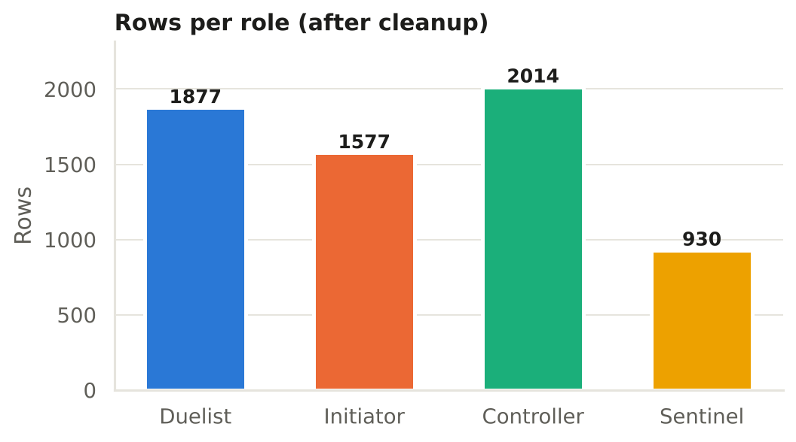
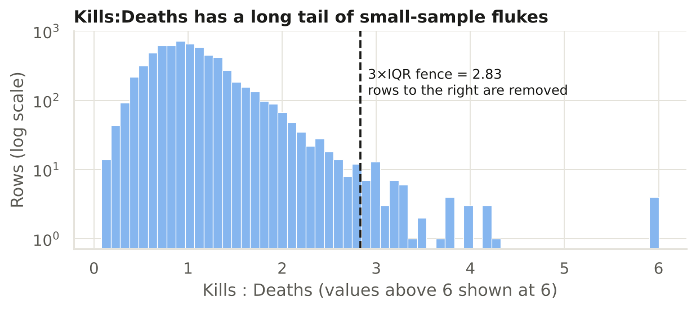
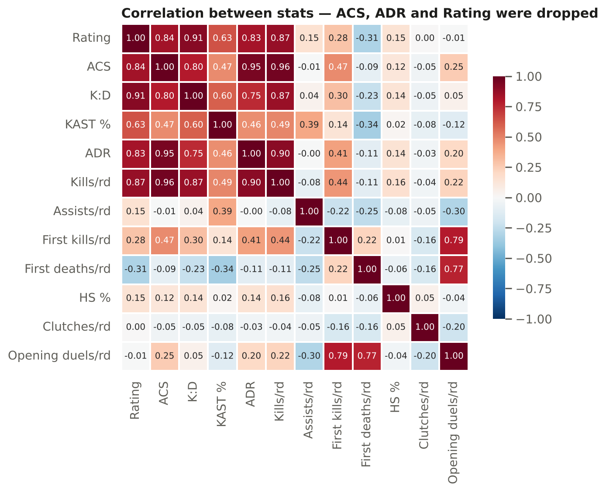
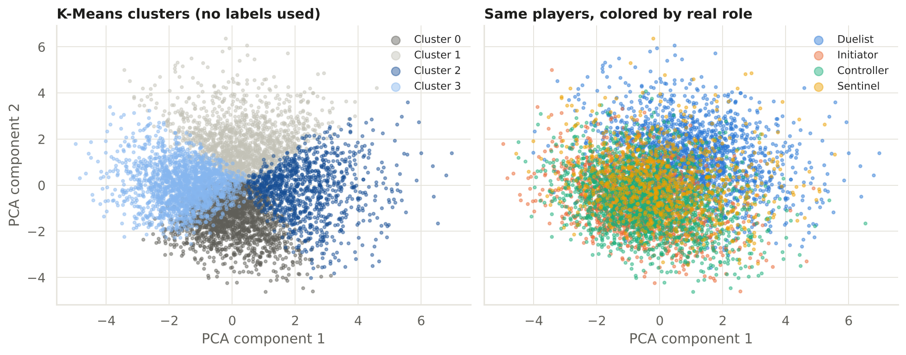
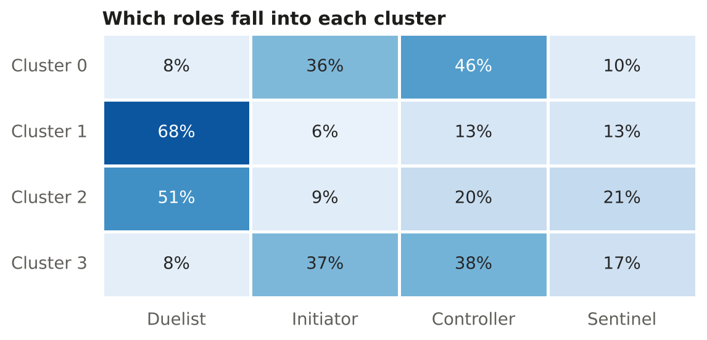
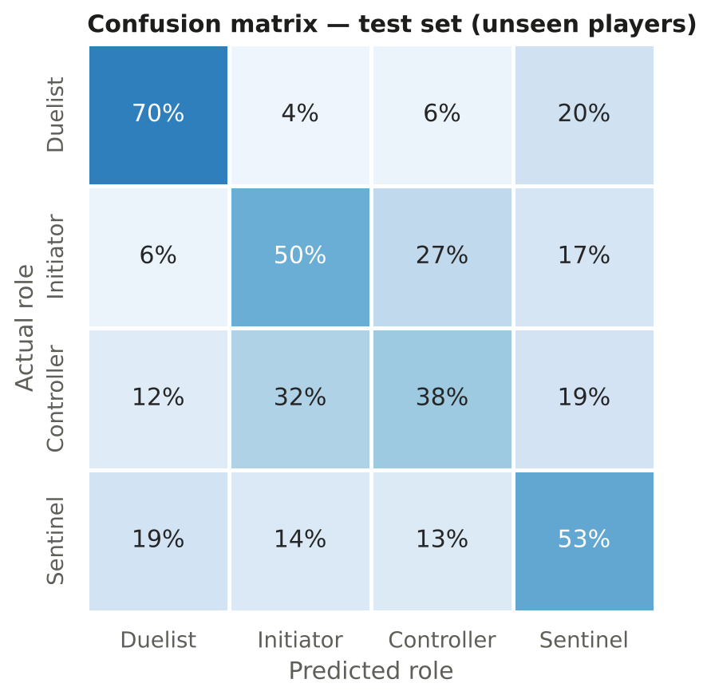
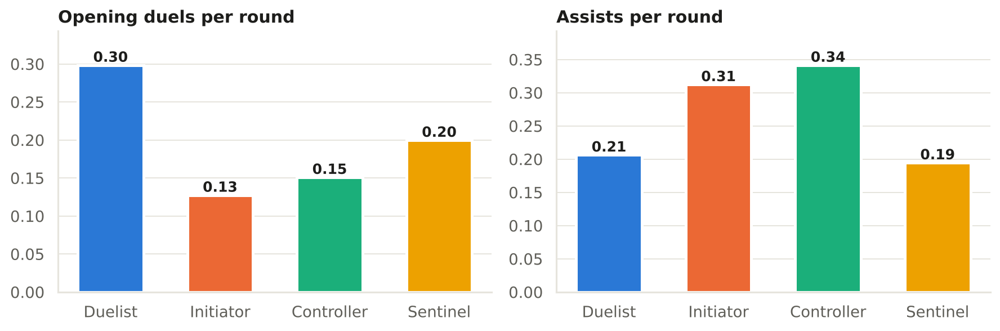

The dataset
This dataset is from Kaggle, and is about the Valorant Champions Tour 2026. Each row is one player, on one agent, in one stage of VCT 2026. The reason I care about this is because I play Valorant, and I want to see if a machine learning model can tell what role a pro player was playing from their stats alone. The dataset has 6,398 rows after cleaning, and the target variable is the player's role: duelist, initiator, controller, or sentinel.
Feature engineering
a · Class balance

This is moderately imbalanced, with the controller role comprising about 32% of the data, while the sentinel role makes up only around 15%. The reason for this is that duelists and initiators are more common in pro play, while sentinels are less frequently picked. This imbalance can affect model performance, so I will need to consider techniques to address it, such as class weighting or resampling methods.
b · Histograms & outliers

Most of the features are roughly bell shaped, the K:D has a long right tail. I used a wide 3xIQR fence to remove extreme outliers, which are mostly small sample sizes (for example a player who played only one round). This helps to reduce noise in the data and improve model performance.
c · Missing values
| Column | Missing | Fix |
|---|---|---|
| Clutch Success % | 74% | Dropped |
| Clutches per round | 28% | Filled with 0 |
| Rating, KAST, HS%, first kills/deaths… | ~2% | Median per role |
For missing clutches, this means that the player had no clutches, so 0 would be the true value. Per role median is also missing because different roles have different typical values, so filling with the overall median would bias the data. For example, duelists tend to have higher first kill rates than sentinels, so filling a missing value for a duelist with the sentinel median would be misleading.
d · Encoding
I used one hot encoding for Stages, since there is no natural order of the stages. For agents, I used target encoding, which replaces each agent with the mean of the target variable (role) for that agent. This allows the model to learn the relationship between agents and roles without introducing too many new features. I also dropped the player name and agent columns, since they are not useful for prediction and could introduce bias.
e · Correlated columns

The ACS is mostly computer from damage + kills, so it makes sense that it correlates highly with kills per round and ADR. Rating is a composite metric that includes K:D, so it also makes sense that they correlate. I will keep all of these features for now, since they may still provide useful information to the model, but I will monitor for multicollinearity during model training.
Clusters, without using y


The K-Means clustering algorithm was applied to the scaled stats, with k=4 to match the number of roles. The resulting clusters were then projected to 2D using PCA for visualization. The duelists (blue) are clearly separated from the other roles, while the initiators and controllers overlap significantly. This suggests that duelists have distinct stat profiles, while the other roles are more similar to each other. The heatmap shows the share of each role within each cluster, confirming that cluster 1 is predominantly duelists, while clusters 0 and 3 contain a mix of initiators and controllers.
Split, model, train, test
I grouped by player when splitting the data, so that the model is tested on players it has never seen before. This is important because it simulates a real-world scenario where we want to predict the role of a new player based on their stats. The logistic regression model was chosen for its simplicity and interpretability, and class weights were balanced to account for the class imbalance in the dataset. The model was trained on the training set and evaluated on the test set, with results compared to a baseline model that always predicts the most common role, as well as a polynomial version of the logistic regression model.
Results
| Model | Train acc. | Test acc. | Test macro F1 |
|---|---|---|---|
| Baseline (most common role) | 32.0% | 29.6% | 0.11 |
| Logistic regression | 53.4% | 52.5% | 0.52 |
| Polynomial logistic regression | 55.2% | 51.8% | 0.50 |

The confusion matrix shows that duelists are predicted correctly 70% of the time, while controllers are only predicted correctly 38% of the time. Initiators and sentinels have intermediate accuracy, with 50% and 53% respectively. This indicates that the model is better at identifying duelists, likely due to their distinct stat profiles, while it struggles more with controllers, which may have more overlap with other roles in terms of stats. The overall test accuracy of 52.5% is a significant improvement over the baseline of 29.6%, demonstrating that the model is able to learn meaningful patterns from the data.

What I learned
I learned that a simple logistic regression model can achieve over 50% accuracy in predicting a pro Valorant player's role from their stats alone, which is significantly better than the baseline of always guessing the most common role. The model performs best on duelists, likely due to their distinct stat profiles, while it struggles more with controllers. This project also reinforced the importance of proper data preprocessing, feature engineering, and handling class imbalance in machine learning tasks. Overall, this was a valuable exercise in applying machine learning techniques to a real-world dataset and gaining insights into player roles in competitive gaming.